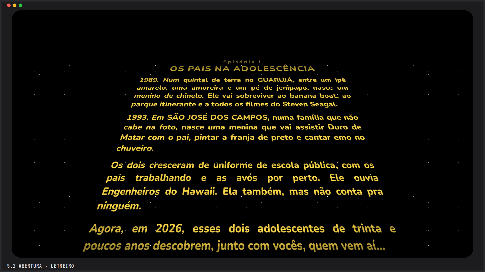
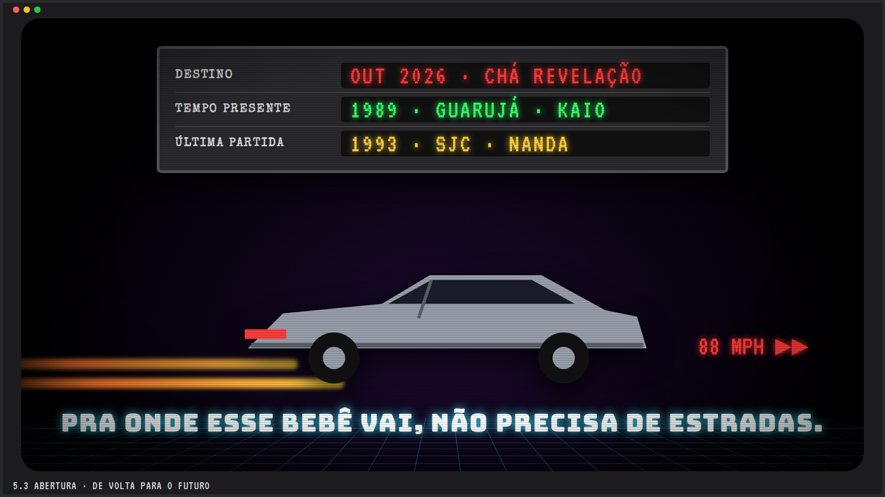
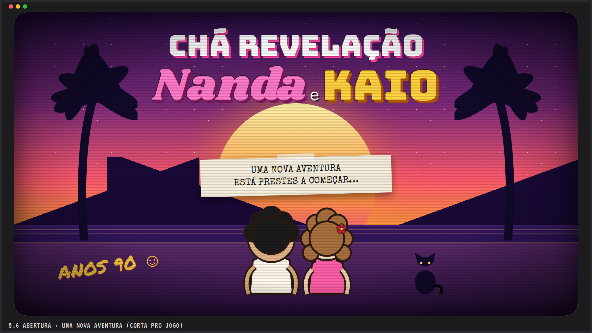

Abertura · roda depois do play, antes do jogo · cerca de 70 segundos · um clique pulaStoryboard da abertura
1. A fita entraChiado, "PLAY ▶", tracking. 5 s

2. Letreiro Star WarsA história dos dois: 1989 Guarujá, 1993 SJC, emo, Engenheiros. 30 s

3. De volta para o futuroO painel do carro: destino 2026, presente 1989, última partida 1993. 8 s4. Parque dos bebêsLogo com o T-Rex, trovão, título surge por trás. 6 s5. MatrixChuva de código, "pílula azul ou pílula rosa?". 6 s

6. Uma nova aventuraOs dois de costas olhando o mar, com o gato. Corta pro jogo. 8 s
Cada cena é HTML, CSS e SVG animados, sem vídeo e sem nada de fora: leve, nítida em qualquer projetor e fácil de ajustar o texto.